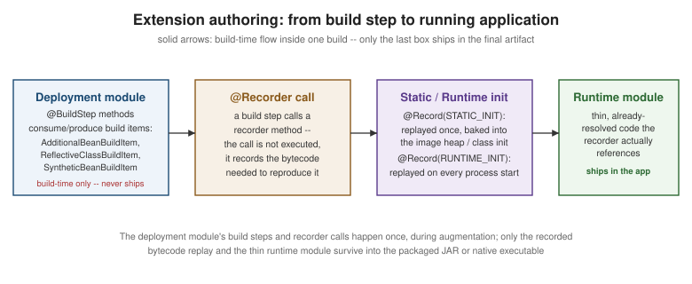

Writing Extensions
|
This content was generated with the assistance of AI and should be verified against the official documentation before being relied on in production. |
Every Quarkus extension — first-party or Quarkiverse — is built with the same tooling and the same
@BuildStep/build-item model this page documents; nothing about it is privileged over what a third-party
extension author can do. Build-Time Augmentation and the
Closed World already explains why augmentation, build steps, build items, and recorders exist and what
problem they solve for an application; this page assumes that model and covers the authoring side — the
project layout an extension actually needs, the concrete build items and configuration annotations used to write
one, conditional dependencies and capabilities, codestarts, writing a Dev Service and a Dev UI page, native-image
support, testing, and — just as important — when writing an extension is not the right tool at all.
Scaffolding an extension
The CLI generates the standard two-module (plus an optional integration-tests module) project layout:
quarkus create extension org.acme:acme-widgetwhich produces:
-
deployment/— the build-time-only module:@BuildStepmethods, recorders' augmentation-time logic, and anything else that must exist only while augmentation runs. Never placed on the runtime classpath of an application that uses the extension. -
runtime/— the thin module that ships inside the final application: the classes a recorder actually references at static/runtime init, plus the extension’s public runtime API (CDI beans, client classes, annotations application code uses directly). -
integration-tests/— a small sample Quarkus application, generated alongside the two library modules, used to exercise the extension end to end the way a real consuming application would.
This mirrors exactly the deployment/runtime split described conceptually on Build-Time Augmentation and the Closed World: the split is not just a description of how Quarkus itself is built, it is the literal Maven/Gradle module boundary an extension author creates and must respect, enforced by the build (a deployment-module class referenced from runtime code fails the build rather than silently leaking through).
@BuildStep and build items
A build step is an ordinary method on a class in the deployment module, annotated @BuildStep, whose
parameters are build items it consumes and whose return value (or BuildProducer<T> parameter) is build items
it produces. Augmentation orders the whole graph of build steps across every extension present by their
declared inputs and outputs — no build step needs to know which other extension produced or will consume a
build item, only its type.
A handful of build items recur across most extensions:
| Build item | Purpose |
|---|---|
|
Registers one or more classes as CDI beans without requiring them to carry a bean-defining annotation themselves — the usual way an extension contributes its own runtime classes (a producer, a default implementation) into the application’s bean graph. |
|
Registers a class for reflective access under native image (see
Native Executables with GraalVM/Mandrel) — the build-time
equivalent of hand-writing a GraalVM |
|
Announces the extension’s feature name, shown in the startup banner and the build report — purely informational, but the conventional way an extension identifies itself as active in a given build. |
|
Programmatically constructs a CDI bean at build time whose implementation is not simply "here is a class,
register it" — typically a bean instantiated by calling into a |
Many other build items exist for narrower needs — CombinedIndexBuildItem (the Jandex index of the whole
application, the usual starting point for a build step that scans for annotations), routes, OpenAPI model
contributions, and dozens more specific to a given subsystem; the
Writing Your Own Extension guide and the Quarkus core source tree
itself are the authoritative catalog, since new build items are added as Quarkus’s own subsystems evolve.
package org.acme.widget.deployment;
import org.acme.widget.runtime.WidgetRecorder;
import org.acme.widget.runtime.WidgetService;
import io.quarkus.arc.deployment.AdditionalBeanBuildItem;
import io.quarkus.deployment.annotations.BuildStep;
import io.quarkus.deployment.annotations.ExecutionTime;
import io.quarkus.deployment.annotations.Record;
import io.quarkus.deployment.builditem.FeatureBuildItem;
class WidgetProcessor {
private static final String FEATURE = "acme-widget";
@BuildStep
FeatureBuildItem feature() {
return new FeatureBuildItem(FEATURE);
}
@BuildStep
AdditionalBeanBuildItem additionalBeans() {
return AdditionalBeanBuildItem.unremovableOf(WidgetService.class);
}
}@Recorder classes and when their bytecode runs
A @Recorder-annotated class’s methods do not execute at build time — calling one during a build step records
the sequence of bytecode instructions needed to reproduce that call’s effect later, exactly as described on
the build-time augmentation page. What that page does not
cover is how a build step controls when the recorded bytecode replays: the @Record annotation on the
@BuildStep method itself, with an ExecutionTime of either STATIC_INIT (replayed once, baked into a native
image’s image heap, or once per JVM class-initialization) or RUNTIME_INIT (replayed on every process start,
for anything that depends on the actual running environment — real configuration values, open sockets):
package org.acme.widget.deployment;
import org.acme.widget.runtime.WidgetConfig;
import org.acme.widget.runtime.WidgetRecorder;
import io.quarkus.deployment.annotations.BuildStep;
import io.quarkus.deployment.annotations.ExecutionTime;
import io.quarkus.deployment.annotations.Record;
import io.quarkus.arc.deployment.SyntheticBeanBuildItem;
class WidgetProcessor {
@BuildStep
@Record(ExecutionTime.RUNTIME_INIT)
SyntheticBeanBuildItem widgetServiceBean(WidgetRecorder recorder, WidgetConfig config) {
return SyntheticBeanBuildItem.configure(org.acme.widget.runtime.WidgetService.class)
.scope(jakarta.enterprise.context.ApplicationScoped.class)
.supplier(recorder.widgetServiceSupplier(config))
.done();
}
}package org.acme.widget.runtime;
import io.quarkus.runtime.annotations.Recorder;
import java.util.function.Supplier;
@Recorder
public class WidgetRecorder {
public Supplier<WidgetService> widgetServiceSupplier(WidgetConfig config) {
return () -> new WidgetService(config.greeting());
}
}Build-time configuration: @ConfigRoot and @ConfigMapping
An extension declares its own configuration the same way documented on
the Configuration page — a @ConfigMapping interface — with one
addition specific to extension authoring: @ConfigRoot(phase = ConfigPhase.BUILD_TIME) marks a configuration
root as resolved once, during augmentation, rather than overridable at runtime. A build-time root is what a build
step reads to decide what to generate; it cannot legally change between environments the way
ConfigPhase.RUN_TIME configuration can, because its value is already baked into the augmented output:
package org.acme.widget.runtime;
import io.quarkus.runtime.annotations.ConfigRoot;
import io.smallrye.config.ConfigMapping;
import io.smallrye.config.WithDefault;
import static io.quarkus.runtime.annotations.ConfigPhase.BUILD_TIME;
@ConfigRoot(phase = BUILD_TIME)
@ConfigMapping(prefix = "quarkus.acme-widget")
public interface WidgetConfig {
/** Whether the widget feature is enabled at all -- a build-time decision, since disabling it also
* removes the generated bean and reflection metadata rather than merely toggling behavior. */
@WithDefault("true")
boolean enabled();
/** The greeting message a WidgetService instance is constructed with. */
@WithDefault("Hello")
String greeting();
}Never use @ConfigProperties here, or anywhere else in an extension’s own configuration or in generated example
code — @ConfigMapping is the current, supported binding annotation throughout Quarkus.
Conditional dependencies and capabilities
An extension’s quarkus-extension.yaml descriptor (generated by the archetype under
runtime/src/main/resources/META-INF/) can declare:
-
Conditional dependencies — an artifact only pulled onto the classpath when another specific extension is also present, used for optional integration glue that would otherwise force every consumer of the base extension to also pull in a dependency they may not want.
-
Provided and required capabilities — named contracts, the same mechanism covered from the consuming side on Extensions and the Platform. Declaring
provides-capabilitieslets Quarkus detect at build time when two extensions compete for the same capability (for example, two different JSON-provider extensions) and fail the build with a clear conflict message instead of an obscure runtime failure; declaringrequires-capabilitieslets a build step assert a dependency on another extension’s capability without a hard compile-time dependency on that extension’s classes.
Extension metadata and the maturity matrix
The same descriptor also carries the extension’s status metadata (status: stable / preview / experimental)
that consumers see reflected in the maturity levels documented on
Extensions and the Platform — an extension author sets
this once, honestly, rather than a downstream tool inferring it.
CDI integration and codestarts
Beyond AdditionalBeanBuildItem, an extension integrates with ArC the same way documented on
CDI and the Programming Model — registering
producers, qualifiers, or an AnnotationsTransformer from a build step when the extension needs to influence how
other code’s beans are discovered or scoped, rather than only contributing its own beans.
A codestart is the template an extension contributes so quarkus create/code.quarkus.io can scaffold working
example code the moment the extension is added, instead of leaving a consumer to read documentation before
writing a single line. Codestarts live under deployment/src/main/resources/codestarts/<extension-name>/, with
one subdirectory per supported language (java, kotlin), each containing the example source, a snippet of
application.properties, and a codestart descriptor tying them together — consult
the Writing Your Own Extension guide for the exact directory
layout and descriptor schema, which is more detailed than is useful to restate here.
Writing a Dev Service
A Dev Service — the zero-config ephemeral container behavior covered from the consumer’s side on
Developer Experience — is authored as a @BuildStep in the
deployment module that runs only in dev mode and tests, checks whether the relevant configuration (a
datasource URL, a broker address) was already supplied explicitly, and — only if not — starts a Testcontainers
container and produces a DevServicesResultBuildItem carrying the configuration properties (host, port,
credentials) that the running application should use instead. The explicit-configuration check is what keeps a
Dev Service from ever activating in a properly configured production build; getting that check right is the
single most important correctness property of a Dev Service implementation.
Adding a Dev UI page
An extension contributes a page to the Dev UI (/q/dev, also covered on
Developer Experience) from a build step that produces a card/page
build item describing the page’s title, icon, and content source, paired with a JSON-RPC service class (in the
deployment or runtime module, depending on whether the data needs build-time or live runtime state) that
supplies the page’s actual data to the Dev UI’s frontend at request time. This is the same general shape as any
other build item/recorder pairing above — a build step registers that a page exists, and a backing service
supplies what it shows — but the exact API classes involved evolve with the Dev UI’s own frontend, so consult
the current Dev UI guide for the concrete classes rather than relying on
example code that risks going stale.
Native-image support in an extension
An extension makes its own dependencies native-image-safe on behalf of every consuming application, rather than
leaving each consumer to work it out independently, primarily through three build items alongside
ReflectiveClassBuildItem above:
-
NativeImageResourceBuildItem— registers a classpath resource (a bundled properties file, a certificate) that native-image’s static analysis would not otherwise know is read at runtime. -
NativeImageProxyDefinitionBuildItem— registers a dynamic proxy interface combination the extension’s runtime code creates viajava.lang.reflect.Proxy, which native-image cannot discover on its own. -
RuntimeInitializedClassBuildItem— marks a class that must be initialized at native-image runtime rather than baked into the build-time image heap, typically because it holds state (a random seed, a native library handle) that is only valid for the process that created it.
Getting these right is exactly what turns "this library happens to work when added to a Quarkus app" into "this extension is native-image-tested" — see Native Executables with GraalVM/Mandrel for what happens when they are missing and how the resulting failures typically look.
Testing an extension
Two distinct test layers cover an extension, at two different levels:
-
QuarkusUnitTest, run from thedeploymentmodule, drives augmentation against a small, in-memory synthetic application (.setArchiveProducer(…)) without needing a full separate project — the fastest way to assert that a given build step produces the build items it should, or that a misconfiguration fails the build with the expected error. -
@QuarkusTest, run from the generatedintegration-testsmodule’s sample application, exercises the extension exactly the way a real consuming application would — an end-to-end check that augmentation, the recorded runtime bytecode, and the extension’s public API all work together, the same testing style covered in depth on Testing.
When to write an extension at all
Writing a full deployment/runtime pair is the right tool when the requirement is genuinely build-time in nature
or needs to be reusable across applications: contributing reflection/resource registration for native image,
generating code or CDI beans from build-time-only information, adding a Dev Service or Dev UI page, or packaging
a capability other extensions should be able to detect and depend on. It is not the right tool for something a
plain CDI bean already solves inside a single application — a @Recorder, two Maven modules, and a
quarkus-extension.yaml descriptor are meaningful overhead to take on for logic that never needs to run at
build time and is never shared beyond one codebase. The deciding question is whether the logic needs
augmentation’s capabilities (native-image metadata, build-time code generation, Dev Services/Dev UI, cross-cutting
CDI integration) or reusability across more than one application; if the answer to both is no, an ordinary
@ApplicationScoped bean, documented on
CDI and the Programming Model, is simpler, faster to
write, and easier for the next reader to follow.
The diagram below summarizes the authoring-time flow this page covers, from the deployment module’s build steps down to what actually ships in the runtime application:
